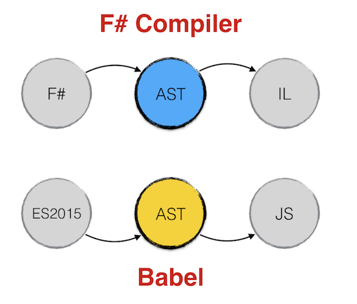
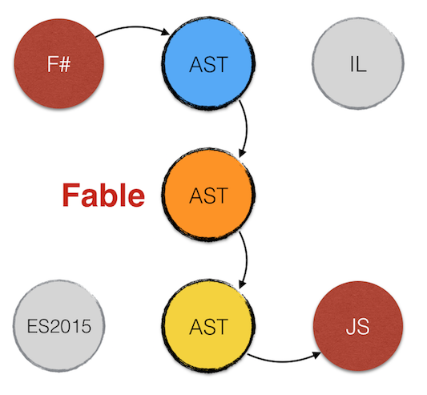
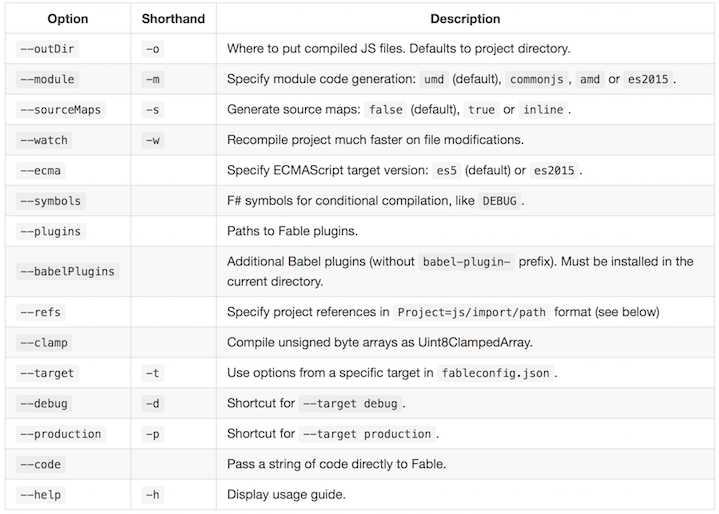

from Microsoft.FSharp.Core
type Format<'Printer,'State,'Residue,'Result> = PrintfFormat<'Printer,'State,'Residue,'Result>
Full name: Microsoft.FSharp.Core.Format<_,_,_,_>
--------------------
type Format<'Printer,'State,'Residue,'Result,'Tuple> = PrintfFormat<'Printer,'State,'Residue,'Result,'Tuple>
Full name: Microsoft.FSharp.Core.Format<_,_,_,_,_>
Full name: Microsoft.FSharp.Core.ExtraTopLevelOperators.sprintf
Full name: index.( Util.reverse works )
Full name: Microsoft.FSharp.Core.ExtraTopLevelOperators.printfn
Full name: index.x
Full name: index.y
Full name: index.data
Full name: index.add
val int : value:'T -> int (requires member op_Explicit)
Full name: Microsoft.FSharp.Core.Operators.int
--------------------
type int = int32
Full name: Microsoft.FSharp.Core.int
--------------------
type int<'Measure> = int
Full name: Microsoft.FSharp.Core.int<_>
val string : value:'T -> string
Full name: Microsoft.FSharp.Core.Operators.string
--------------------
type string = System.String
Full name: Microsoft.FSharp.Core.string
val float : value:'T -> float (requires member op_Explicit)
Full name: Microsoft.FSharp.Core.Operators.float
--------------------
type float = System.Double
Full name: Microsoft.FSharp.Core.float
--------------------
type float<'Measure> = float
Full name: Microsoft.FSharp.Core.float<_>
Full name: Microsoft.FSharp.Core.Operators.failwith
type Test =
new : unit -> Test
member Invoke : args:int [] -> obj
member Item : float
member Item : float with set
Full name: index.Test
--------------------
new : unit -> Test
Full name: index.Test.Invoke
Full name: Microsoft.FSharp.Core.obj
Full name: index.Test.Item
Full name: Microsoft.FSharp.Core.ExtraTopLevelOperators.set
Full name: Microsoft.FSharp.Core.unit
from index
interface
abstract member detectIncompleteChar : buffer:'a0 -> float
abstract member write : buffer:'a0 -> 'a1
end
Full name: index.string_decoder.NodeStringDecoder
Full name: index.string_decoder.NodeStringDecoder.write
Full name: index.string_decoder.NodeStringDecoder.detectIncompleteChar
Full name: index.string_decoder.StringDecoder
Fable: the what, the why and the how
Bringing together the F# and JS worlds
 meets
meets

WHO IS MAKING THIS PRESENTATION?
Alfonso Garcia-Caro
- Degree in Linguistics
- Lived in Japan, Germany (back in Spain now)
- 5 years .NET experience
- 2 years F# and JS experience
- Developed desktop, mobile and web apps for videogame, green energy and education industries
Ping me! @alfonsogcnunez
Working at toggl.com, the insanely simple time tracking app
Give it a try!
WHAT IS FABLE?
- F# to JS compiler
- Source maps
- Plugin system
- Framework agnostic
- Batteries charged: F# core library and some .NET BCL
NOT AND AD-HOC LANGUAGE
- F# is a general purpose language mainly targeting .NET
- Not crafted specifically to compile to JS, like Dart, TypeScript or Elm
- Allows you to reuse your knowledge: semantics, tooling and APIs
BUT BEHAVES LIKE ONE
WHY FABLE?
JavaScript is evolving at rapid pace, do we need a new language?
ES2015 adds many great features and JS development tools keep getting better and better
But there are still things some programmers miss:
- Static typing
- Great editor support out of the box
- Comprehensive core library
F# brings this and a couple more features...
- REPL
- Intellisense
- Type inference
- Custom operators
- Whitespace indentation (optional)
- Expression based programming
- Pattern Matching
- Active Patterns
- Immutable by default
- Partial application / Pipelines
- Functional core library (LINQ on steroids!)
- Observables
- String formatting
- Structural comparison
- List, array and iterable comprehensions
- Generics, unions, records and tuples
- Type aliases
- DSL embedded in the language
- Typed-stateless Async programming
- OOP: Inheritance, interfaces, abstract classes
- Custom computation expressions
- Overloading, type extensions
- Type providers (coming to Fable)
- Units of measure
- Circular dependency restriction
- Compiler directives
- An excuse for being condescendant with non-functional programming
- Don Syme retweeting you!
And the killer feature...
LEFT PADDING OUT OF THE BOX!
1: 2: 3: 4: 5: 6: 7: 8: 9: 10: 11: 12: 13: |
|
HOW DOES FABLE WORK?
This is what a day in the life of a compiler looks like:
- Parse and validate text into an Abstract Syntax Tree
- Make necessary transformations on that AST
- Generate new code from the AST: assembly, bytecode, JS...
As Fable works with known languages it can take advantage of existing tools.
F# compiler, like Roslyn, can be used as a service: we completed the first step for free!
Unfortunately JS is not a compiled language
...or is it?

Enter Babel

Babel generates an AST from ES2015 code, applies transformations with a pluggable system and generates ES5 JavaScript code.

Fable builds a bridge between F# and Babel AST delegating the reponsibility of code parsing and generation.
Fable adds its own AST for internal operations:
HOW CAN I USE FABLE?
Fable can be downloaded from npm
1: 2: 3: 4: 5: 6: 7: 8: |
|
Compiler options
Tailor compilation to your needs:

fableconfig.json
1: 2: 3: 4: 5: 6: 7: 8: 9: 10: 11: 12: 13: 14: 15: 16: 17: 18: 19: 20: |
|
DEMO
Console application
https://github.com/fsprojects/Fable/blob/master/samples/node/console/index.fs
TESTING
NUnit or Visual Studio tests can be compiled to JS too
1: 2: 3: 4: 5: 6: 7: 8: 9: |
|
Compile the tests using NUnit plugin and run them with Mocha
1: 2: 3: 4: 5: |
|
INTERACTING WITH JS
We don't want to just intrude the JS ecosytem, we want to take advantage of its full potential.
Because .NET community is great
F# community is fantastic
JS community is...
HUGE
...and amazing too :)
DYNAMIC PROGRAMMING WITH FABLE
1: 2: 3: 4: 5: 6: 7: 8: 9: 10: 11: 12: 13: 14: 15: 16: 17: |
|
JS MACROS
Use Emit attribute to emit JS code directly
1: 2: 3: 4: 5: 6: 7: 8: 9: 10: 11: 12: 13: 14: 15: 16: |
|
FOREIGN INTERFACES
Define foreign interfaces easily to get the benefits of static checking and Intellisense
1: 2: 3: 4: 5: 6: 7: |
|
Use Import attribute to import external JS modules in ES2015 fashion
- Native JS, Browser and Node interfaces are included in fable-core
- More definitions can be found in npm: fable-import-xxx
- A TypeScript parser (still in development) is also available: ts2fable
DEMO
Node static server
https://github.com/fsprojects/Fable/blob/master/samples/node/server/index.fsx
DEMO
Debugging a node express server with VS Code
1: 2: 3: 4: 5: 6: 7: 8: |
|
DEMO
Front end applications with JS frameworks: Vue, React
https://github.com/fsprojects/Fable/tree/master/samples/browser/todomvc
https://github.com/fsprojects/Fable/tree/master/samples/browser/react
FABLE IN NUMBERS
- Currently in beta: v0.2.2 (soon v1.0.0)
- >600 unit tests
- >800 lines of documentation
- >4500 lines of code of compiler core
- 4 months of development (but building on FunScript experience)
- 5th place after 2 months in fsprojects (Github stars)
- >300 commits, >170 stars, 12 contributors
- 6 packages in npm: compiler, core lib, bindings, TypeScript parser
- 2500 downloads last month
- 10,000 users 2016 Q4 (1)
- 1,000,000 downloads 2016 Q4 (1)
(1) CMUF: Completely made up figures
SO WITH F# NOW YOU CAN DO...
- Front-end apps
- Node apps
- Native iOS & Android apps with Xamarin
- Mobile apps with Apache Cordova or React Native
- Universal Windows Platform (soon)
- Cross-platform desktop apps (Electron, .NET/Mono)
- Server programming: Suave, ASP.NET
- GPU programming
- Functional programming on .NET
And the final appeal...
(In case someone from Redmond is in the room)
MICROSOFT, don't make the same mistake as with Xamarin
Buy Fable now and save a few million bucks ;)
Thanks for listening!
Questions?
https://github.com/fsprojects/Fable
@alfonsogcnunez